This weeks assignment was to design a 3d mould, make it, and cast parts from it. The design process i followed was to first design the part I wanted, which I've shown here:

As you can see, I'm going for something a little ambuitious cast. the object is a ball with three grooves running along the surface in the X, Y and Z axes . if there were only two grooves then I could have used a two part mould but since there are three, I'll have to insert a circulat former in the mould to make the third groove.
Once I'm done making the object, I want to see what the objects negative (the mould) would look like, So using solidworks' 'Combine' feature (Don't let the name mislead you, it has all the boolean functions) I subtract the balls face from a block , getting something like this:
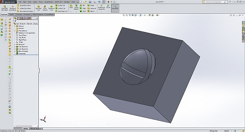however, If i make two like these , It will be impossible to remove the objwct without destroying the mould, so Instead i modify the design of the mould so that I can do it in 4 parts as shown :
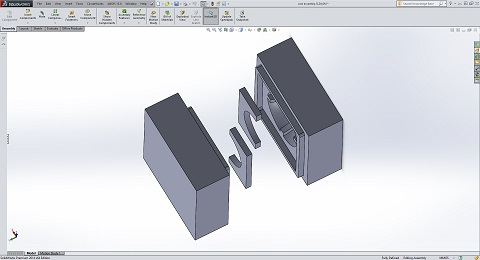And here's a GIF explaining how it comes together
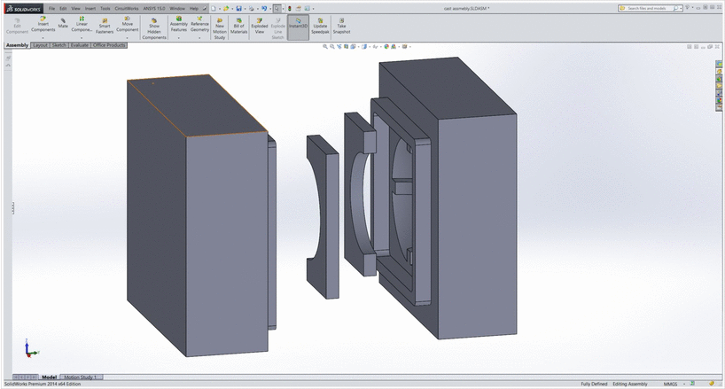So nw that the design of the mould is complete, i need to export its positive in STL , which looks like this:
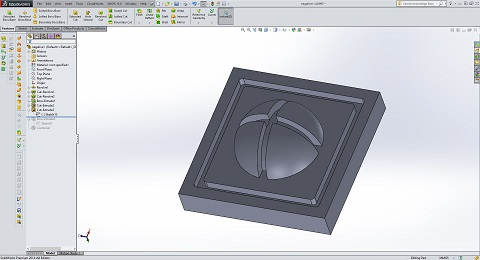
To machine the positive of the mould, I needded to use the fabmodules to produce a 3d path to cut the moulds, however the fabmodules kept on hanging up while calculating the toolpaths, so idecided to use the shopbot instead.
To anchor the machinable wax to the rable, I needed to place it on a larger surface that I could then secure to the spoil board. To attach the wax to the acryllic board, I used double sided tape, followed by some hot glue round the edges
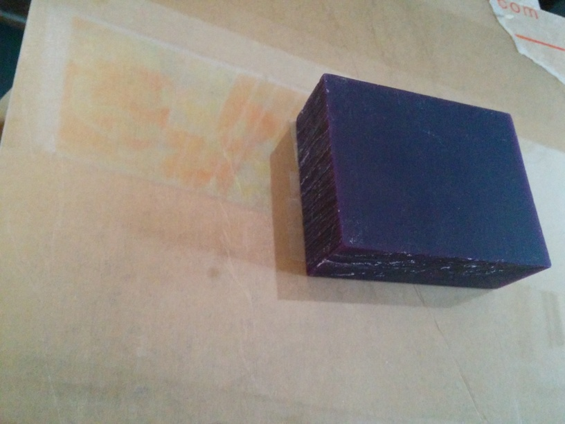 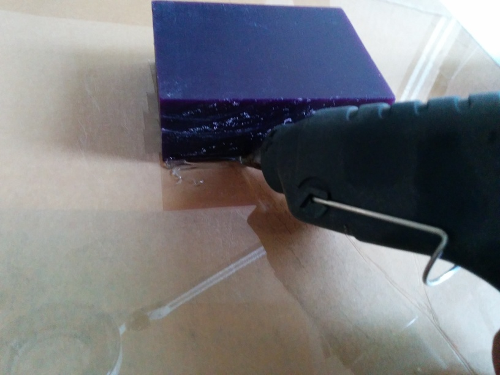 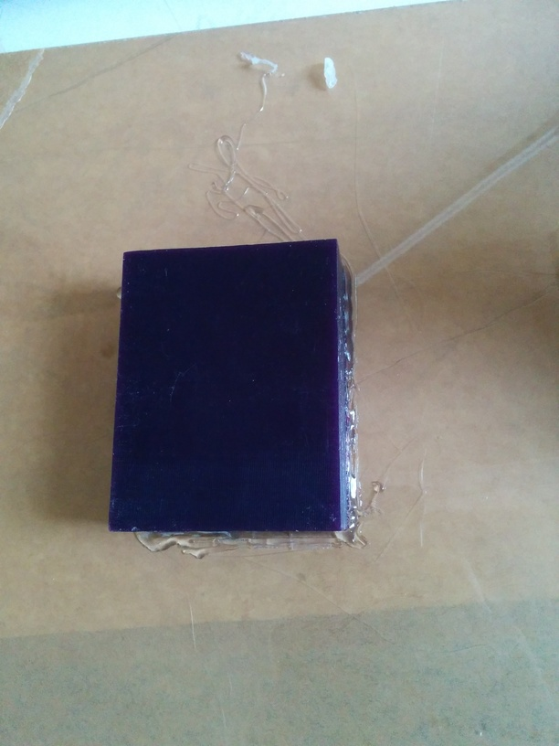The Acryllic sheet i anchored to the spoilboard using two clamps at the edges and a screw. Initially the screw broke the board so I had to improvise to be able to attachh the sheet to the spoil board
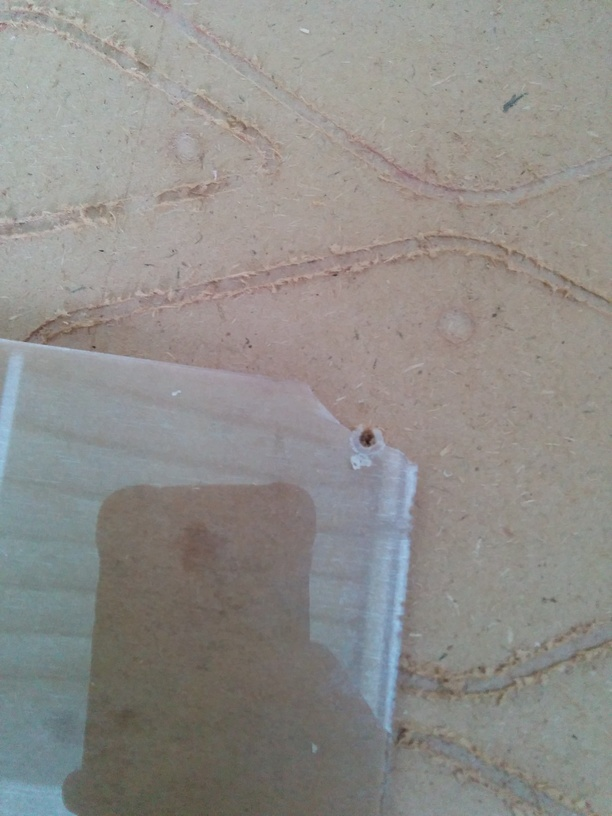 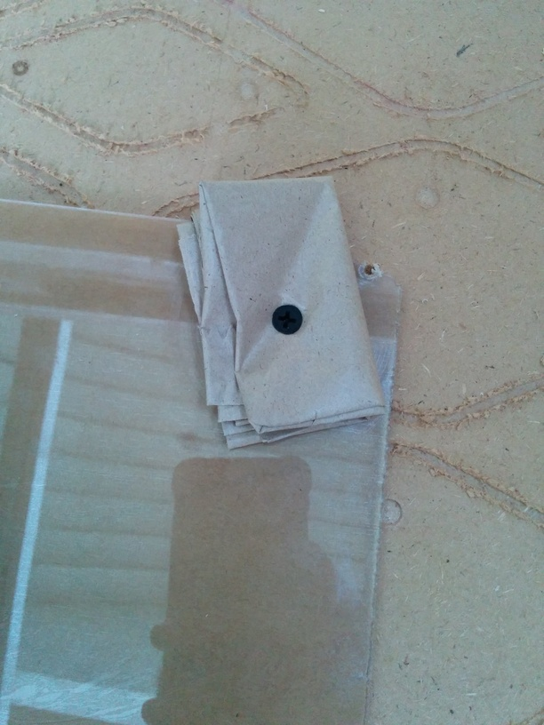I then had to zero the machine's X and Y
 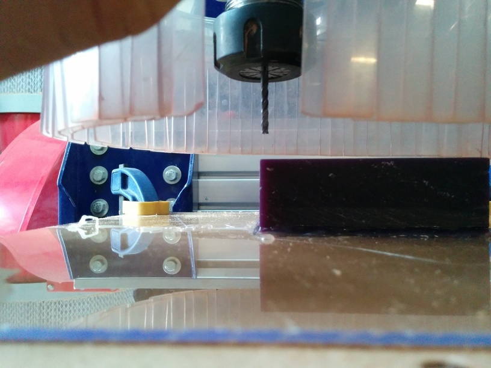
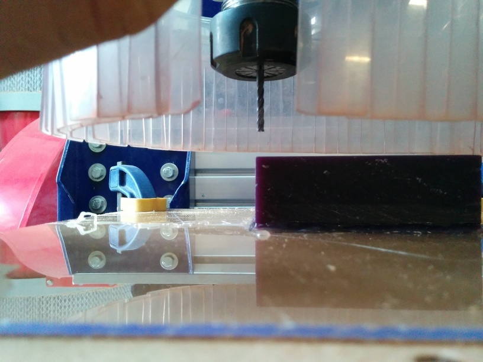
After machining, the part looked like this:
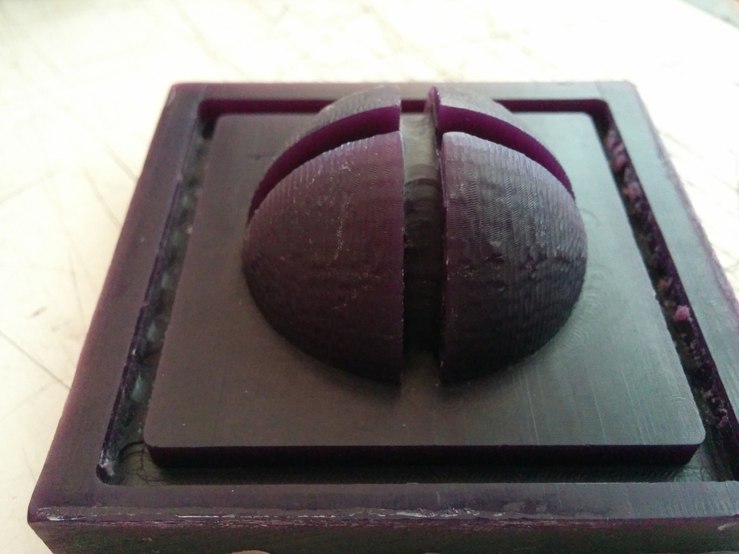While machining the second mould positive, I set the feed rate of the machine too high (I was using a 1/8 in 4 fluted endmill) and the bit snapped into three pieces. So I restarted the job (the zero and job position was unchanged, I re-zeroed the Z axis) , but something went wrong (I think I might have given a zero offset by accident while doing the job again, and I got this
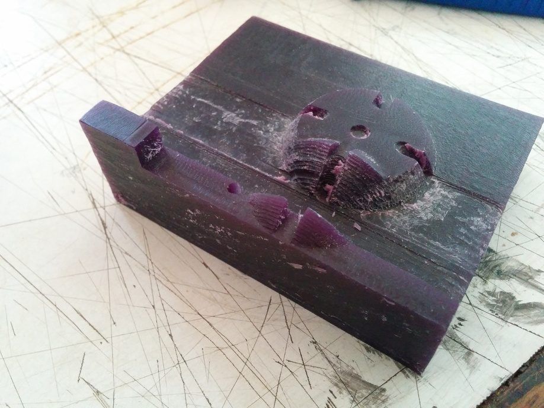unfortunately, the CNC had to be disassembled and put away after this job because of construction in the lab, so I was stuck with only one part of my mould, I decided to cast it anyway
To make the mould we had to use PolyUrethane rubber, which comes in two parts (A and B) that have to be mixed thoroughly. [note: you have to mix it a LOT {Seriously, I can't stress how LONG(THREE nested brackets?!? YES! that's how important it is to keep mixing till you can't feel your fingers anymore) it takes for this to mix} more than you think you have to]
Once mixed , the brown viscous mixture has to be poured onto the mould. In an attempt to reduce the bubbles that might form on the surface of the mould, I hooked up a motor to small piece of wood and turned it on so it would vibrate, I then placed this under the mould housing to form a makeshitft vibration table
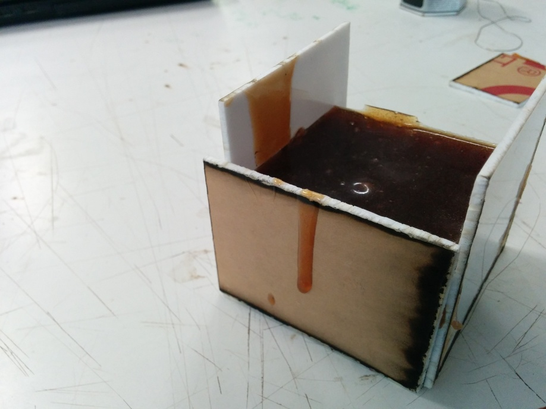It takes a few hours to dry completely, after which it comes off the wax quite easily.
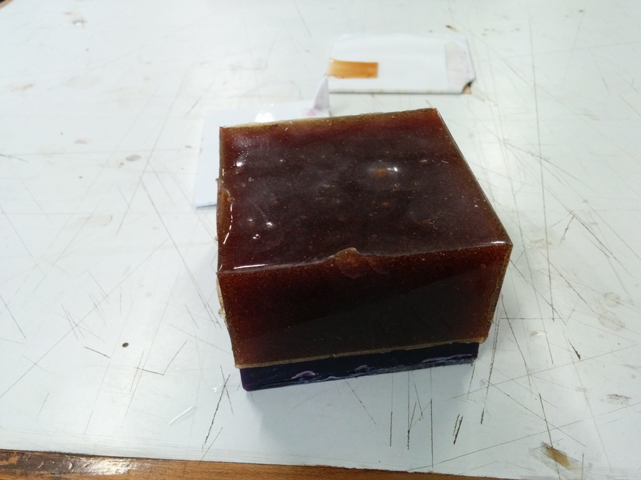 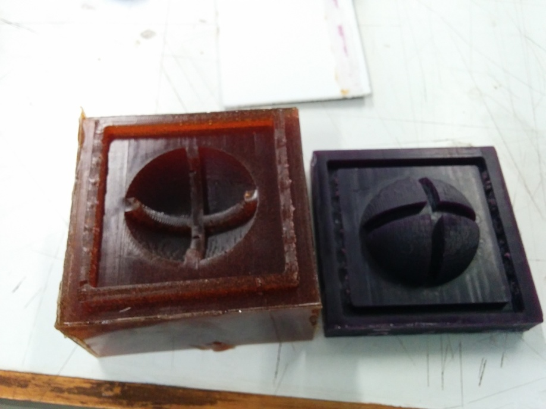After this step, we habve to repeat the mixing process with the casting material, the bright white plastic. This material is far less viscouse and pours in quite easily. but after a while it gets extremely hot, so don't touch it while its curing. One mistake I made was that I didn't oil or lubricate the mould, thinking that even the white plastic would come off as easily as the polyurethane had, but this material gets stuck to the mould as if its life depended on it. to de mould it, I had to use excessive force, and a friends help, It pretty much destroyed the mould, but the level of detail is remarkable
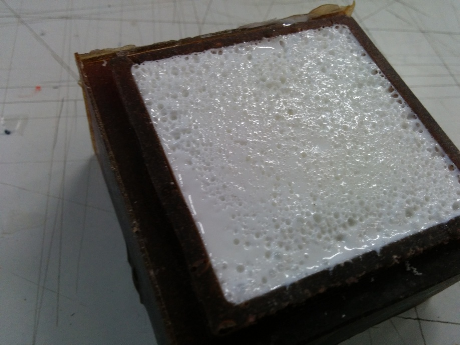 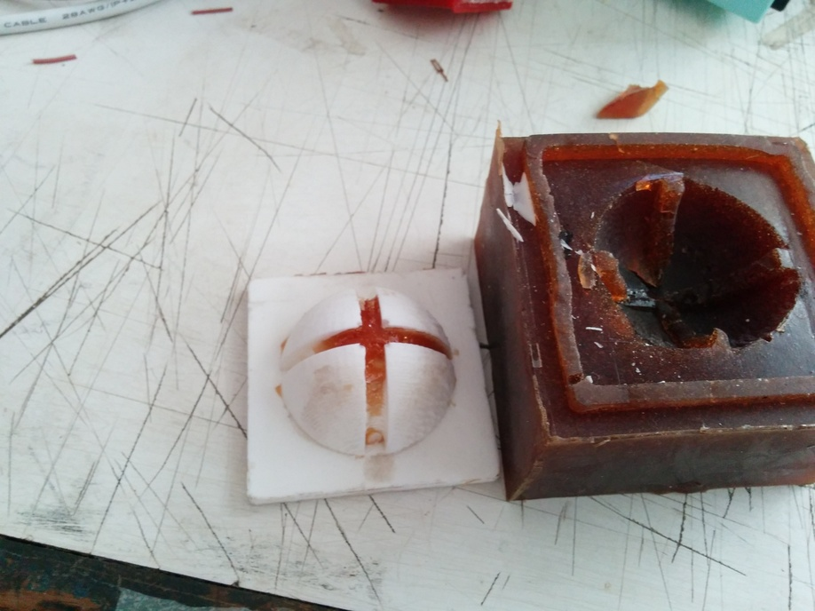 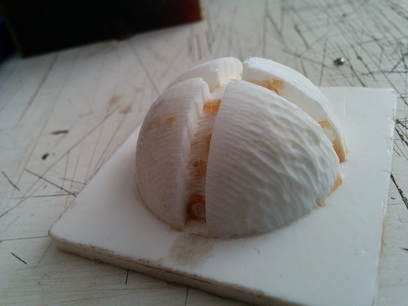 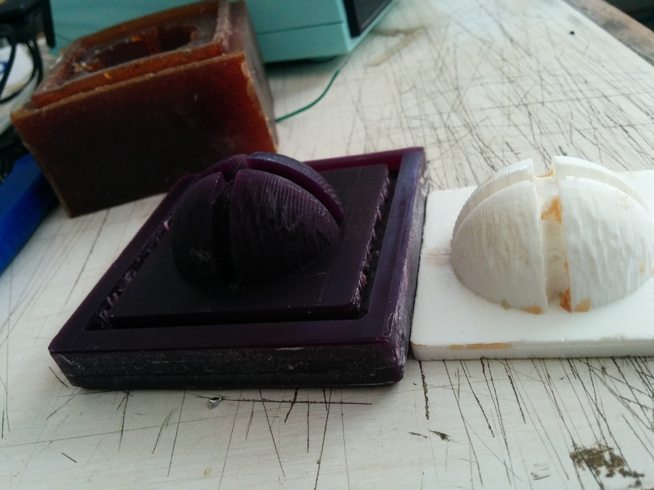 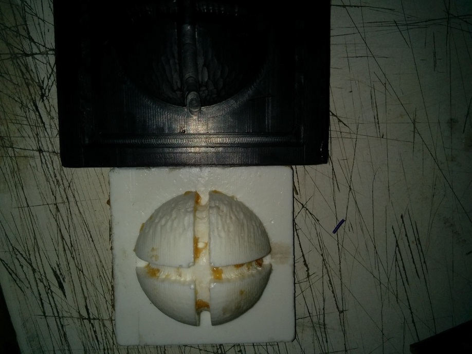